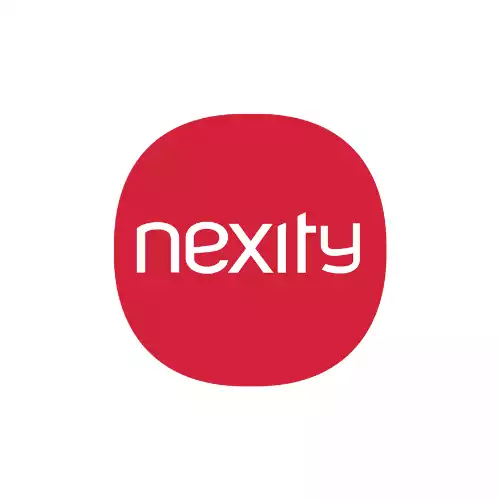
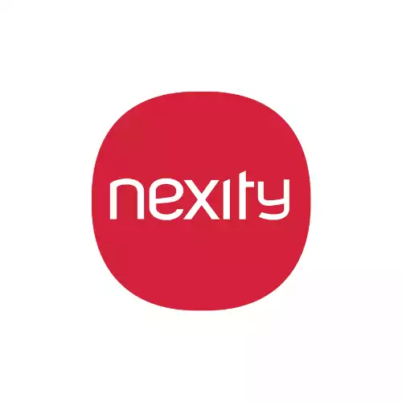

NOS SERVICES

Offrez à vos canalisations à Garges-lès-Gonesse un nettoyage en profondeur avec notre service de curage. Un curage régulier permet d'éviter obstructions et dysfonctionnements. Faites confiance à notre équipe pour assurer le bon état de votre assainissement individuel.
CONTACTEZ - NOUS
Profitez de notre expertise à Garges-lès-Gonesse pour la vidange de fosses septiques, le pompage de bacs à graisse et le traitement des eaux usées. Nous assurons la propreté et le bon fonctionnement de vos installations avec professionnalisme.
CONTACTEZ - NOUS
Optimisez la gestion de vos eaux usées domestiques ou industrielles à Garges-lès-Gonesse avec notre service de pompe de relevage de qualité supérieure. Efficacité et durabilité assurées par notre équipe spécialisée.
CONTACTEZ - NOUS
Pour vos travaux de VRD à Garges-lès-Gonesse, notre équipe réalise tranchées, réseaux d’eau, d’électricité et d’assainissement. Prestations conformes aux normes et adaptées à vos projets de viabilisation de terrain.
CONTACTEZ - NOUS
Nous réalisons le raccordement au réseau public d’assainissement à Garges-lès-Gonesse : tranchées, pose de canalisations et branchement au collecteur communal pour une évacuation conforme de vos eaux usées.
CONTACTEZ - NOUSNettoyage canalisations : Offrez à vos canalisations à Garges-lès-Gonesse un nettoyage en profondeur grâce à notre service de curage. Un entretien régulier évite obstructions et dysfonctionnements. Faites confiance à notre équipe pour préserver votre système d’assainissement individuel.
Raccordement à l'égout : À Garges-lès-Gonesse, confiez vos travaux de raccordement au réseau public à des professionnels. Assainissement 95 gère tranchée, pose de canalisation, et raccordement au collecteur dans le respect des normes et autorisations en vigueur.
Vidange Fosses Septiques : Garantissez le bon fonctionnement de votre installation d’assainissement à Garges-lès-Gonesse avec notre service de vidange de fosses septiques. Assainissement 95 intervient rapidement pour éliminer boues et engorgements, tout en respectant les normes en vigueur.
Pompe de relevage : À Garges-lès-Gonesse, optimisez la gestion de vos eaux usées domestiques ou industrielles avec nos pompes de relevage performantes, installées et entretenues par des experts.
VRD – Voirie et Réseaux Divers : Confiez vos travaux de VRD à Garges-lès-Gonesse à une équipe rigoureuse. Installation de réseaux d’eau potable, d’évacuation des eaux usées et pluviales, raccordements multiples, pour des ouvrages durables et aux normes.
UNE ÉQUIPE PROFESSIONNELLE ET DES ÉQUIPEMENTS MODERNES
Notre expertise en assainissement repose sur une équipe de spécialistes qualifiés et des équipements de dernière génération, assurant des interventions fiables et durables. Que ce soit pour le curage de canalisations, l’entretien ou la vidange de fosses septiques, l’installation et la maintenance de pompes de relevage, ou encore pour la réalisation de travaux VRD et de raccordements aux réseaux, nous proposons des solutions adaptées à chaque besoin. Grâce à une combinaison de savoir-faire technique et de matériel performant, nous garantissons un service complet et conforme aux normes en vigueur pour toutes vos installations d’assainissement, individuelles comme collectives.
NOS TARIFS
ATTRACTIFS
Nous vous offrons des services d'assainissement de qualité à des prix attractifs. Notre engagement est de vous fournir des solutions efficaces sans compromettre votre budget. Contactez-nous dès maintenant pour découvrir nos tarifs avantageux et bénéficier d'un service fiable et professionnel.
DEVIS GRATUITPOURQUOI CHOISIR ASSAINISSEMENT 95 POUR VOS TRAVAUX À Garges-lès-Gonesse ?
Pour vos travaux d’assainissement en Île-de-France, faire appel à Assainissement 95, c’est opter pour la qualité, la fiabilité et la sérénité. Forts de plusieurs années d’expérience, nous avons bâti une solide réputation grâce à notre savoir-faire et à l’implication de notre équipe. Chaque intervention – qu’il s’agisse de curage de canalisations, de vidange de fosse septique ou de traitement des eaux usées – est réalisée avec rigueur et professionnalisme, du premier diagnostic jusqu’à la finition.
NOS CONTRATS VOUS LIBÈRENT DE TOUS SOUCIS

CONTRATS PONCTUELS
CONTRATS ANNUELS
Grâce à nos contrats d’assainissement personnalisés, vous pouvez aborder vos travaux en toute sérénité. Chez Assainissement 95, nous mettons un point d’honneur à vous garantir une totale transparence à chaque étape : de la planification à la réalisation, en passant par les délais et les coûts. Nos formules couvrent les prestations telles que le curage de canalisations, l’entretien de fosses septiques, l’installation et la maintenance de pompes de relevage, ainsi que les travaux de VRD et de raccordement aux réseaux. Avec notre engagement qualité, vous bénéficiez d’un service fiable, clair et durable.
L’ENTREPRISE D’ASSAINISSEMENT QUI VOUS SIMPLIFIE LA VIE
Absorbex Assainissement 95, expert de l'assainissement à Garges-lès-Gonesse, résout efficacement les urgences pour particuliers et professionnels. Nos contrats sur mesure assurent une tranquillité totale, détaillant chaque étape et coût. Services : curage canalisation, vidange fosse septique, traitement eaux usées, débouchage canalisations, assainissement individuel, micro station d'épuration.
En cas de proximité avec un égout public, nous procédons à l'évacuation nécessaire, acheminant les eaux usées jusqu'au point de raccordement du canal collectif en bordure de la propriété. En l'absence d'égout public, notre solution consiste à installer un réservoir d'eau complet, assurant le traitement des eaux grises et noires de la maison. La qualité du raccordement et du système d'épuration, notamment par tranchée et filtre à sable, est une garantie de notre expertise.
Absorbex Assainissement 95 assure une disponibilité totale, 24h/24 et 7j/7, weekends et jours fériés inclus. En plus des interventions d'urgence, notre entreprise peut effectuer le remplacement des tuyaux, la rénovation des équipements et égouts, l'adaptation du réseau d'égouts, le nettoyage et l'entretien des collecteurs, ainsi que la vidange des stations d'épuration.
NOS PARTENAIRES


 
